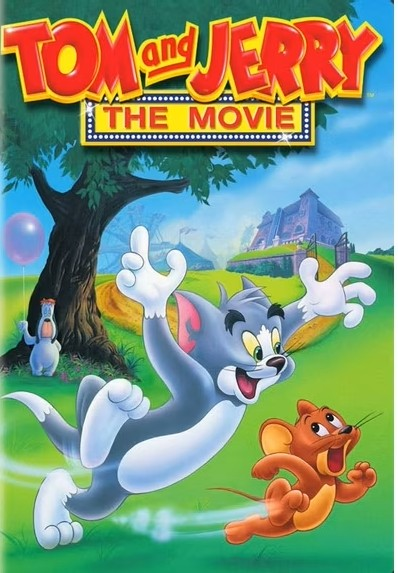

Tom and Jerry
Tom and Jerry is one of the most famous cartoons in the world, known for its creative humor and nonstop action. The show focuses on the rivalry between Tom, a cat, and Jerry, a clever mouse who always finds a way to escape danger. Even without much dialogue, the cartoon still makes people laugh through visual comedy and exaggerated movements.
One interesting thing about Tom and Jerry is how the backgrounds and settings change throughout each episode. Sometimes they are inside a house, while other times they explore outdoor areas or even travel to different cities. These settings add variety and make each scene feel unique and exciting for viewers of all ages.